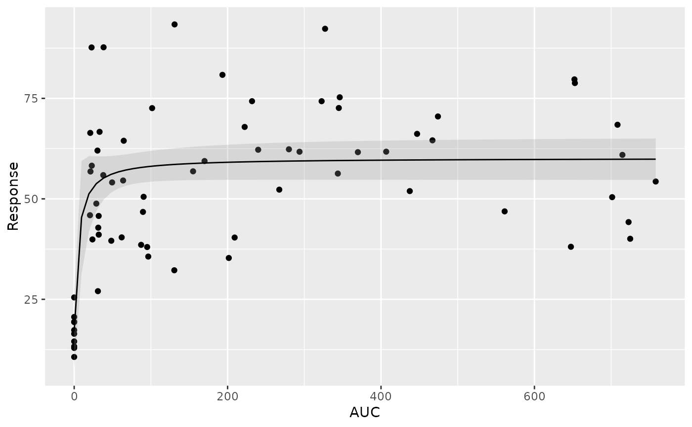

predict.nls
# S3 method for nls
predict(
object,
newdata = NULL,
se.fit = FALSE,
interval = "none",
level = 0.95,
...
)Object of class inheriting from "nls"
An optional data frame in which to look for variables with which to predict. If omitted, the fitted values are used.
A switch indicating if standard errors are required.
Type of interval calculation, "none" or "confidence"
Level of confidence interval to use
additional arguments affecting the predictions produced.
predict.nls produces a vector of predictions or a matrix of predictions and
bounds with column names fit, lwr, and upr if interval is set.
If se.fit is TRUE, a list with the following components is returned:
vector or matrix as above
standard error of predicted means
residual standard deviations
degrees of freedom for residual
set.seed(12345)
data_to_plot <- data.frame(x1 = rep(c(0, 25, 50, 100, 200, 400, 600), 10)) %>%
dplyr::mutate(AUC = x1*rlnorm(length(x1), 0, 0.3),
x2 = x1*stats::rlnorm(length(x1), 0, 0.3),
Response = (15 + 50*x2/(20+x2))*stats::rlnorm(length(x2), 0, 0.3))
gg <- ggplot2::ggplot(data = data_to_plot, ggplot2::aes(x = AUC, y = Response)) +
ggplot2::geom_point() +
xgx_geom_smooth(method = "nls",
method.args = list(formula = y ~ E0 + Emax* x / (EC50 + x),
start = list(E0 = 15, Emax = 50, EC50 = 20) ),
color = "black", size = 0.5, alpha = 0.25)
#> Warning: Ignoring unknown parameters: `n_boot`
gg
#> `geom_smooth()` using formula = 'y ~ x'

mod <- stats::nls(formula = Response ~ E0 + Emax * AUC / (EC50 + AUC),
data = data_to_plot,
start = list(E0 = 15, Emax = 50, EC50 = 20))
predict(mod)
#> [1] 17.05332 54.15070 56.11231 57.81393 59.26947 59.23966 59.85441 17.05332
#> [9] 52.44004 55.13104 58.02762 59.53387 59.67291 59.84459 17.05332 54.31521
#> [17] 55.17472 57.89343 59.39324 59.66263 59.86729 17.05332 51.73216 54.22450
#> [25] 56.92881 59.53164 59.53597 59.85356 17.05332 52.66874 57.01629 59.06273
#> [33] 59.57470 59.82204 59.81944 17.05332 52.36393 54.05553 58.91766 59.10619
#> [41] 59.76903 59.42831 17.05332 54.49480 57.05320 58.80251 58.56358 59.69996
#> [49] 59.85026 17.05332 51.94137 57.87332 58.12810 59.20124 59.50063 59.82176
#> [57] 17.05332 54.32563 57.99766 56.19157 59.14335 59.35841 59.84758 17.05332
#> [65] 51.84829 53.78323 58.55934 59.49175 59.69316 59.62627
predict(mod, se.fit = TRUE)
#> $fit
#> [1] 17.05332 54.15070 56.11231 57.81393 59.26947 59.23966 59.85441 17.05332
#> [9] 52.44004 55.13104 58.02762 59.53387 59.67291 59.84459 17.05332 54.31521
#> [17] 55.17472 57.89343 59.39324 59.66263 59.86729 17.05332 51.73216 54.22450
#> [25] 56.92881 59.53164 59.53597 59.85356 17.05332 52.66874 57.01629 59.06273
#> [33] 59.57470 59.82204 59.81944 17.05332 52.36393 54.05553 58.91766 59.10619
#> [41] 59.76903 59.42831 17.05332 54.49480 57.05320 58.80251 58.56358 59.69996
#> [49] 59.85026 17.05332 51.94137 57.87332 58.12810 59.20124 59.50063 59.82176
#> [57] 17.05332 54.32563 57.99766 56.19157 59.14335 59.35841 59.84758 17.05332
#> [65] 51.84829 53.78323 58.55934 59.49175 59.69316 59.62627
#>
#> $se.fit
#> [1] 4.643762 3.215771 2.277363 1.903964 2.263329 2.249810 2.569192 4.643762
#> [9] 4.107527 2.717938 1.914607 2.392441 2.466553 2.563472 4.643762 3.130352
#> [17] 2.696665 1.906163 2.321756 2.460936 2.576710 4.643762 4.466217 3.177395
#> [25] 2.010702 2.391286 2.393527 2.568693 4.643762 3.989687 1.990402 2.174182
#> [33] 2.413783 2.550419 2.548915 4.643762 4.146559 3.265369 2.118360 2.192010
#> [41] 2.520107 2.338965 4.643762 3.037709 1.982410 2.078240 2.007490 2.481438
#> [49] 2.566770 4.643762 4.361273 1.905410 1.924841 2.232709 2.375338 2.550254
#> [57] 4.643762 3.124954 1.912204 2.246387 2.207643 2.304950 2.565212 4.643762
#> [65] 4.408085 3.407768 2.006391 2.370806 2.477682 2.441238
#>
#> $df
#> [1] 67
#>
predict(mod,
newdata = data.frame(AUC = c(0, 25, 50, 100, 200, 400, 600)),
se.fit = TRUE)
#> $fit
#> [1] 17.05332 52.96502 56.23071 58.09689 59.09828 59.61753 59.79347
#>
#> $se.fit
#> [1] 4.643762 3.835935 2.231431 1.921304 2.188728 2.436544 2.534013
#>
#> $df
#> [1] 67
#>
predict(mod,
newdata = data.frame(AUC = c(0, 25, 50, 100, 200, 400, 600)),
se.fit = TRUE, interval = "confidence", level = 0.95)
#> $fit
#> fit lwr upr
#> 1 17.05332 7.784333 26.32231
#> 2 52.96502 45.308459 60.62157
#> 3 56.23071 51.776753 60.68466
#> 4 58.09689 54.261953 61.93183
#> 5 59.09828 54.729562 63.46700
#> 6 59.61753 54.754162 64.48089
#> 7 59.79347 54.735558 64.85138
#>
#> $se.fit
#> [1] 4.643762 3.835935 2.231431 1.921304 2.188728 2.436544 2.534013
#>
#> $df
#> [1] 67
#>
predict(mod,
newdata = data.frame(AUC = c(0, 25, 50, 100, 200, 400, 600)),
se.fit = TRUE, interval = "confidence", level = 0.95)
#> $fit
#> fit lwr upr
#> 1 17.05332 7.784333 26.32231
#> 2 52.96502 45.308459 60.62157
#> 3 56.23071 51.776753 60.68466
#> 4 58.09689 54.261953 61.93183
#> 5 59.09828 54.729562 63.46700
#> 6 59.61753 54.754162 64.48089
#> 7 59.79347 54.735558 64.85138
#>
#> $se.fit
#> [1] 4.643762 3.835935 2.231431 1.921304 2.188728 2.436544 2.534013
#>
#> $df
#> [1] 67
#>